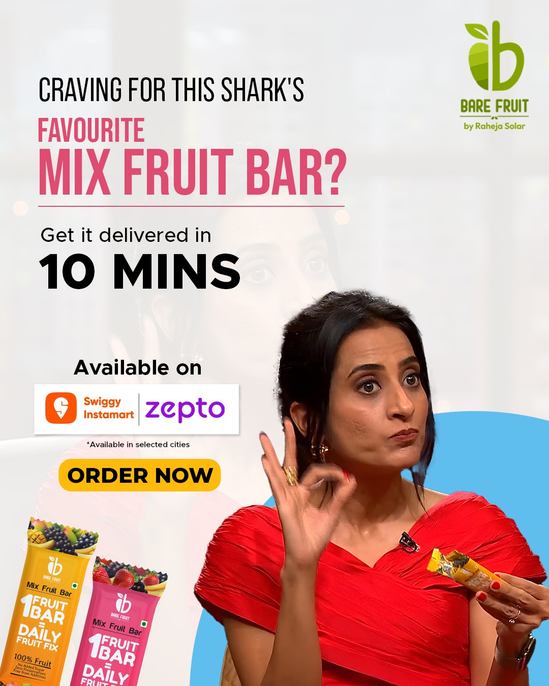
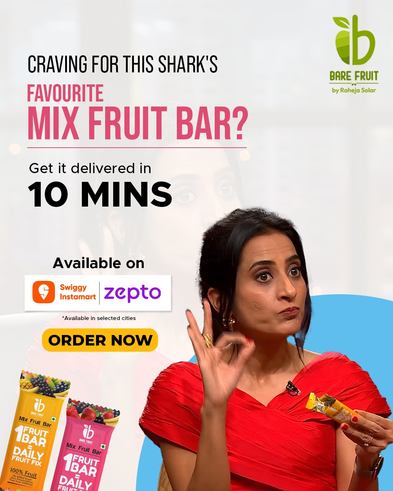

Case Studies
Real results from campaigns I've strategized, created, and managed

Securing National Magazine Coverage
Client: Raheja Solar Food Processing
Developed a comprehensive PR strategy that resulted in a feature story in Agriculture Today Magazine's March 2025 edition, reaching 500,000+ readers nationwide and establishing the brand as a thought leader in sustainable food processing.
3-Month LinkedIn Transformation
Client: Raheja Solar Food Processing
Created and executed a LinkedIn strategy focused on thought leadership and B2B engagement, achieving exponential growth across all key metrics in just 3 months.
 

Building an Engaged Instagram Community
Client: Raheja Solar Food Processing
Developed visual storytelling strategy highlighting the human impact of solar-powered technology. Created educational content that simplified complex concepts into engaging, shareable posts that grew the community to nearly 6,000 followers.
10-Minute Quick Commerce Launch
Client: Bare Fruit by Raheja Solar
Launched a new product line on quick-commerce platforms using Shark Tank exposure and celebrity endorsements. Created urgency-driven content highlighting 10-minute delivery through Swiggy Instamart and Zepto partnerships.

Zero Chemical, 100% Solar Campaign
Client: Raheja Solar Food Processing
Developed a visual content series using infographics and illustrations to explain complex sustainable practices. Successfully simplified technology into accessible, shareable educational content focusing on benefits over features.